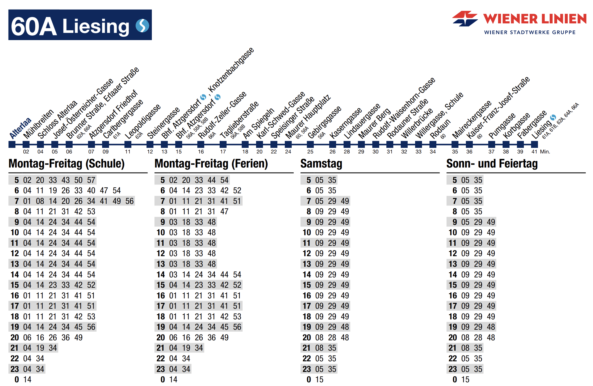
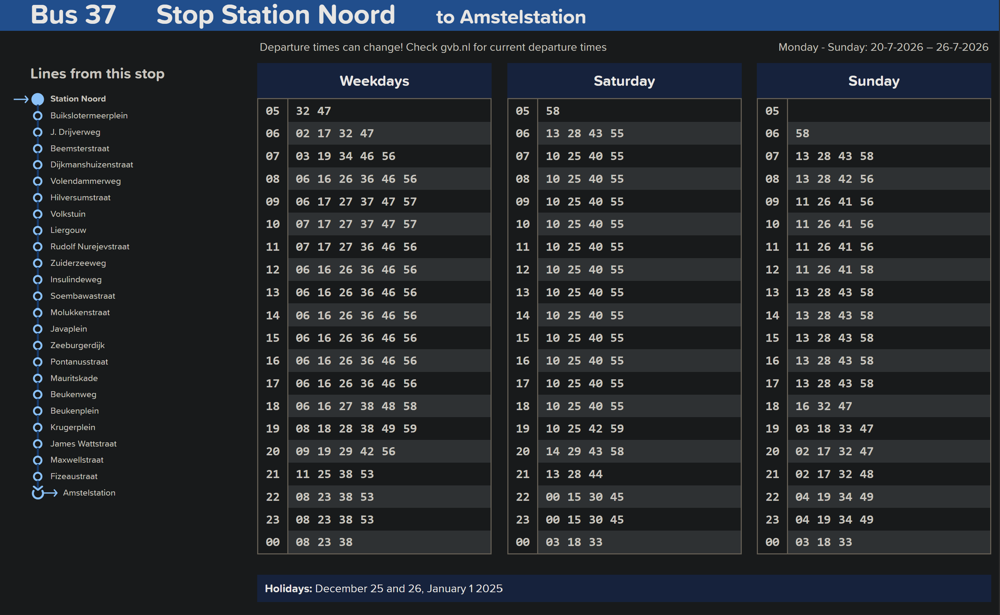
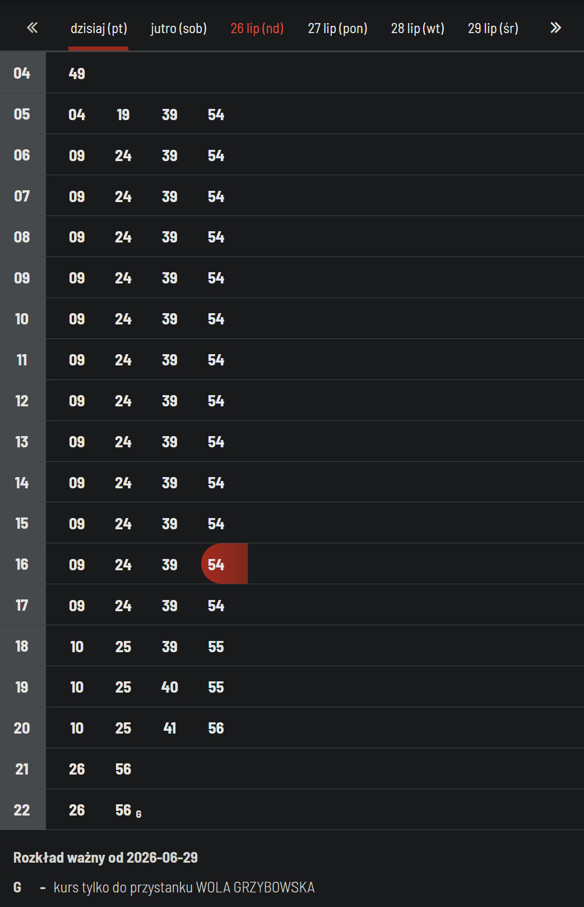

Hours as one column
Introduction
This is a pretty typical timetable style and for a good reason, it's intuitive to read and doesn't take up much space, especially when hours with he same departure minutes are grouped together.
Examples
Vienna

Vienna has a separate timetable for each route and each stop gets it's own page in a pdf. On top we can see all stops with approximate travel times for each stop. The timetable itself shows all timetable periods on one page.
Amsterdam

Amsterdam has a separate timetable for each route and each stop. On the left we can see a list stops. The timetable itself shows all timetable periods on one page.
Warsaw

Warsaw has a separate online timetable for each route and each stop. Unfortunately it doesn't have a pdf version, I think it would be easy to make it.